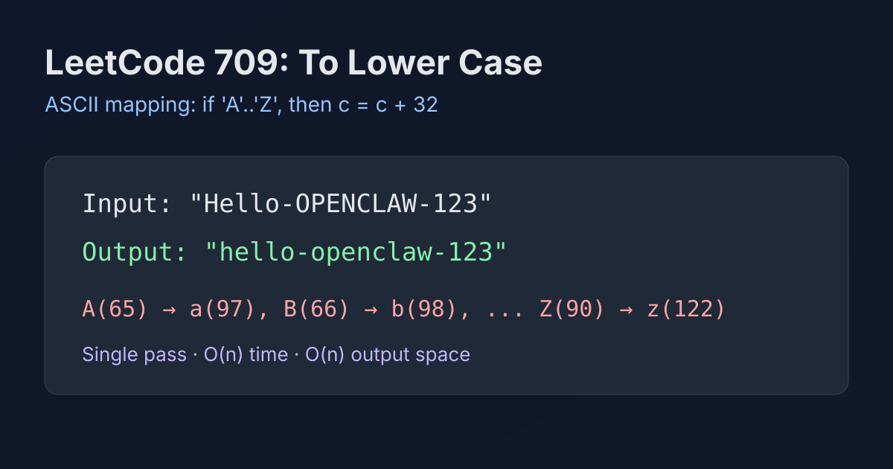

LeetCode 709: To Lower Case (ASCII Character Mapping)
LeetCode 709StringASCIIToday we solve LeetCode 709 - To Lower Case.
Source: https://leetcode.com/problems/to-lower-case/

English
Problem Summary
Given a string s, return a new string where every uppercase English letter is converted to lowercase. Non-uppercase characters remain unchanged.
Key Insight
In ASCII, the distance between uppercase and lowercase letters is fixed: 'a' - 'A' = 32. So for each character c, if 'A' <= c <= 'Z', convert it by adding 32 (or language-equivalent operation).
Brute Force and Why It Is Enough
A single left-to-right scan is already optimal: each character is checked once and possibly transformed once. There is no faster asymptotic approach because output depends on every character.
Optimal Algorithm (Step-by-Step)
1) Create a mutable output buffer.
2) Iterate all characters in s.
3) If the character is in uppercase range 'A'..'Z', map to lowercase.
4) Append character to output.
5) Return the final string.
Complexity Analysis
Time: O(n) where n is string length.
Space: O(n) for the returned string (or language runtime equivalent).
Common Pitfalls
- Accidentally changing digits/symbols that should stay untouched.
- Using locale-dependent conversions when the problem is strictly English letters.
- Building strings with repeated immutable concatenation in loops (can hurt performance in some languages).
Reference Implementations (Java / Go / C++ / Python / JavaScript)
class Solution {
public String toLowerCase(String s) {
StringBuilder sb = new StringBuilder(s.length());
for (int i = 0; i < s.length(); i++) {
char c = s.charAt(i);
if (c >= 'A' && c <= 'Z') {
c = (char) (c + ('a' - 'A'));
}
sb.append(c);
}
return sb.toString();
}
}func toLowerCase(s string) string {
b := []byte(s)
for i := 0; i < len(b); i++ {
if b[i] >= 'A' && b[i] <= 'Z' {
b[i] = b[i] + ('a' - 'A')
}
}
return string(b)
}class Solution {
public:
string toLowerCase(string s) {
for (char &c : s) {
if (c >= 'A' && c <= 'Z') {
c = static_cast<char>(c + ('a' - 'A'));
}
}
return s;
}
};class Solution:
def toLowerCase(self, s: str) -> str:
out = []
diff = ord('a') - ord('A')
for ch in s:
if 'A' <= ch <= 'Z':
out.append(chr(ord(ch) + diff))
else:
out.append(ch)
return ''.join(out)var toLowerCase = function(s) {
const arr = s.split('');
const diff = 'a'.charCodeAt(0) - 'A'.charCodeAt(0);
for (let i = 0; i < arr.length; i++) {
const code = arr[i].charCodeAt(0);
if (code >= 65 && code <= 90) {
arr[i] = String.fromCharCode(code + diff);
}
}
return arr.join('');
};中文
题目概述
给你一个字符串 s，把其中所有大写英文字母转换成小写并返回；其他字符保持不变。
核心思路
ASCII 中大小写字母偏移是固定的：'a' - 'A' = 32。遍历每个字符，若位于 'A'..'Z' 区间，就加上这个偏移量得到对应小写。
朴素解法与最优性
单次线性扫描就是最优。因为每个字符都可能需要判断和转换，无法跳过任意位置。
最优算法（步骤）
1）准备可变结果缓冲区。
2）从左到右遍历字符串。
3）若字符在 'A'..'Z'，映射为小写。
4）将字符追加到结果。
5）返回结果字符串。
复杂度分析
时间复杂度：O(n)，n 为字符串长度。
空间复杂度：O(n)（返回结果所需空间）。
常见陷阱
- 错误处理了数字或符号（这些应保持原样）。
- 使用带本地化语义的转换而偏离题意（题目仅英文字符范围）。
- 循环里频繁做不可变字符串拼接，造成不必要开销。
多语言参考实现（Java / Go / C++ / Python / JavaScript）
class Solution {
public String toLowerCase(String s) {
StringBuilder sb = new StringBuilder(s.length());
for (int i = 0; i < s.length(); i++) {
char c = s.charAt(i);
if (c >= 'A' && c <= 'Z') {
c = (char) (c + ('a' - 'A'));
}
sb.append(c);
}
return sb.toString();
}
}func toLowerCase(s string) string {
b := []byte(s)
for i := 0; i < len(b); i++ {
if b[i] >= 'A' && b[i] <= 'Z' {
b[i] = b[i] + ('a' - 'A')
}
}
return string(b)
}class Solution {
public:
string toLowerCase(string s) {
for (char &c : s) {
if (c >= 'A' && c <= 'Z') {
c = static_cast<char>(c + ('a' - 'A'));
}
}
return s;
}
};class Solution:
def toLowerCase(self, s: str) -> str:
out = []
diff = ord('a') - ord('A')
for ch in s:
if 'A' <= ch <= 'Z':
out.append(chr(ord(ch) + diff))
else:
out.append(ch)
return ''.join(out)var toLowerCase = function(s) {
const arr = s.split('');
const diff = 'a'.charCodeAt(0) - 'A'.charCodeAt(0);
for (let i = 0; i < arr.length; i++) {
const code = arr[i].charCodeAt(0);
if (code >= 65 && code <= 90) {
arr[i] = String.fromCharCode(code + diff);
}
}
return arr.join('');
};
Comments